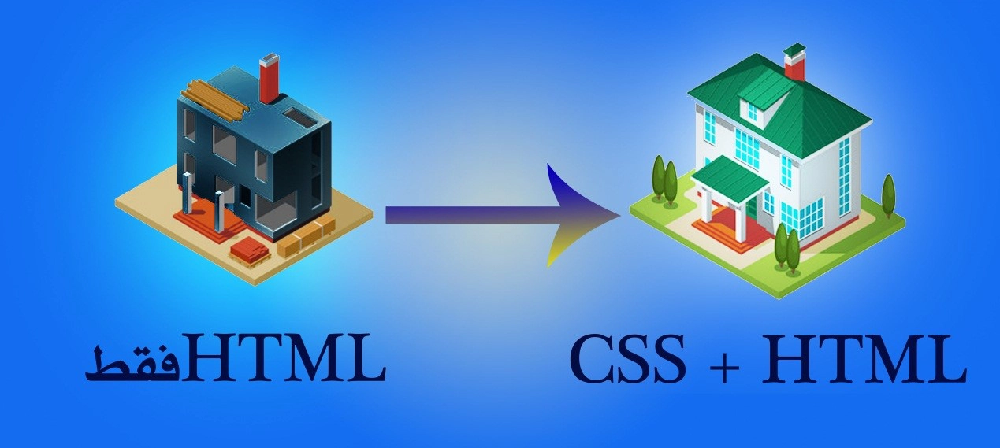

اسم الطالب: رنا رزق السيد حسانيين حسانيين علي
الرقم الجامعي: 2500847
اسم المقرر: تطبيقات الانترنت والمنصات الالكترونية
العام الدراسي: 2026 / 2027
صورة توضح لغة CSS

تعد صفحات الويب من اهم وسائل عرض المعلومات علي الانترنت
ولذلك يجب ان تكون جذابه ومنظمه وسهله الاستخدام
وتساعد لغه cssعلي تحسين مظهر صفحات الويب من خلال تغييرالالوان والخطوط والخلفيات
وتنسيق العناصر وجعلها اكثر جمالا
(css)هي اختصار لعباره (Cascading Style Sheets)وتعني اوراق الانماط المتتاليه
وهي لغه تستخدم لتنسيق مظهر صفحات الويب وابراز شكلها الجمالي مثل الوان النصوص واحجام الخطوط والخلفيات والحدود
| وجه المقارنة | HTML | CSS |
|---|---|---|
| الوظيفة الأساسية | إنشاء محتوى صفحة الويب (الهيكل الأساسي) | تنسيق مظهر صفحة الويب (التصميم والشكل) |
| معنى الاسم | HyperText Markup Language (لغة ترميز النص التشعبي) | Cascading Style Sheets (أوراق الأنماط المتتالية) |
| المكونات | تتكون من وسوم (Tags) زي <h1> و <p> و <img> | تتكون من قواعد (Rules) فيها خصائص (Properties) وقيم (Values) |
| المثال | كتابة النص، إضافة الصور، عمل الجداول | تلوين النص، تغيير نوع الخط، عمل أشكال للأزرار |
| الاعتماد | يمكن أن تعمل بمفردها (لكن هتكون صفحة بيضاء وعادية جداً) | لا تعمل بمفردها، لازم تكون مرتبطة بـ HTML عشان تطبق عليها التصميم |
1- تغير الالوان :تغير الالوان والنصوص
2- تنسيق الخطوط : التحكم في نوع الخط وحجمه وسمكه
3- تنظيم الصفحه : تحديد المسافات بين العناصر
4- تصميم الازرار : تغيير الوان الازرار وشكلها
5- تحسين تجربه الاستخدام : جعل الصفحه اكثر وضوحا وسهوله في الاستخدام
مثال HTML:
<h1>مرحبا بكم في موقعي</h1>
<p>أجمل صفحات الويب</p>
<button>اضغط هنا</button>
مثال CSS:
h1 { color: blue; text-align: center; }
p { color: black; font-size: 18px; background-color: lightyellow; }
button { background-color: green; color: white; border-radius: 8px; }
- "color": لتغيير لون النصوص.
- "text-align": لتحديد محاذاة النص.
- "font-size": لتحديد حجم الخط.
- "background-color":لتغيير لون خلفيه العنصر.
- "border-radius": لتحديد شكل الزوايا للعنصر (مثل الزر).
تساعد cssعلي توحيد تصميم صفحات الموقع ،و تحسين القراءة النصوص ، وتنظيم المحتوي ، وجعل العناصر اكثر وضوحا و جمالا
وايضا يمكن استاخدمها لتكييف تصميم الصفحه مع احجام الشاشات المختلفه.
وعيوب لغه css هي ان هناك بعض التحديات في فهم قواعدها وانها تحتاج الي التدريب وانها يمكن ان تتعارض بعض القواعد اذا لم ننظمها جيدا .
تعتبر CSS في النهاية أداة أساسية في تصميم صفحات الويب، لأنها تساعد على تغيير الألوان والخطوط وتنسيق العناصر،
وتجعل المواقع أكثر جمالاً وتنظيماً وسهولة في الاستخدام.